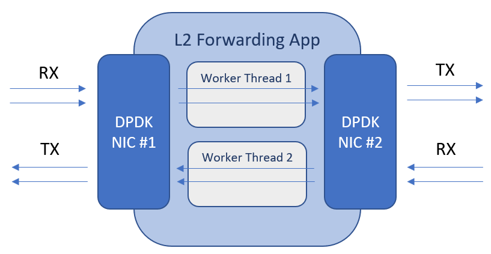

This part explains how to work with PcapPlusPlus DPDK APIs
Table of contents:
One of the key advantages of PcapPlusPlus over similar libraries is its extensive support for the Data Plane Development Kit (DPDK). PcapPlusPlus provides an extensive wrapper for DPDK which encapsulates most of its important and commonly used APIs in an easy-to-use C++ way.
This tutorial will go through the fundamentals of using PcapPlusPlus with DPDK. It will demonstrate how to build a L2 forwarding (bridge) application that receives packets on one interface and sends them on another interface. It may sound simple, but DPDK enables to do that in wire speed (!). This example will demonstrate some of the key APIs and concepts in PcapPlusPlus wrapper for DPDK.
This specific example was chosen because it corresponds to a similar example in DPDK documentation called L2 Forwarding which many DPDK users are probably familiar with, and that may help in better understanding the code and the idea behind it.
Before starting this tutorial it is highly recommended to have a basic understanding of what DPDK is (you can find a lot of reading material in DPDK web-site) and also read the page describing PcapPlusPlus support for DPDK.
For further information about the APIs and classes please refer to the API documentation.
Before diving into the code, let's see how our L2 forwarding (bridge) application will be built:
As you can see, we will use 2 DPDK-controlled NICs, one from each side of the network. We'll also have 2 worker threads. The first thread will receive packets on NIC #1 and will send them on NIC #2 and the other thread will receive packets on NIC #2 and will send them on NIC #1. Now that we have this basic understanding let's go ahead and build this application!
The first thing any application that uses DPDK should do is initialize DPDK and set up the DPDK interfaces (devices). This initialization involves a couple of steps and we'll go through all of them.
The first step is done before running the application. PcapPlusPlus contains a shell script called setup-dpdk.sh which initializes
Huge Pages (which are required for DPDK's memory allocation) and DPDK kernel driver which removes kernel control
from selected NICs and hand it over to DPDK. You can read more about it in PcapPlusPlus support for DPDK page.
The second step is done in the application's code and is a general DPDK initialization phase. It is also described in the PcapPlusPlus support for DPDK page and contains steps like initialize DPDK internal structures and memory pools, initialize packet memory pool, and more. Lets start by writing a general main method and initialize DPDK:
#include <vector>
#include <unistd.h>
#include <sstream>
#include "SystemUtils.h"
#include "DpdkDeviceList.h"
#include "TablePrinter.h"
#include "WorkerThread.h"
#define MBUF_POOL_SIZE 16*1024-1
#define DEVICE_ID_1 0
#define DEVICE_ID_2 1
int main(int argc, char* argv[])
{
// Initialize DPDK
pcpp::CoreMask coreMaskToUse = pcpp::getCoreMaskForAllMachineCores();
pcpp::DpdkDeviceList::initDpdk(coreMaskToUse, MBUF_POOL_SIZE);
....
....
}
There are couple of steps here:
pcpp::DpdkDeviceList::initDpdk() which runs the initializationNow let's find the DPDK interfaces (devices) we'll use to send and receive packets. The class DpdkDevice encapsulates a DPDK interface.
The singleton DpdkDeviceList contains all DPDK devices that are available for us to use:
// Find DPDK devices
pcpp::DpdkDevice* device1 = pcpp::DpdkDeviceList::getInstance().getDeviceByPort(DEVICE_ID_1);
if (device1 == NULL)
{
printf("Cannot find device1 with port '%d'\n", DEVICE_ID_1);
return 1;
}
pcpp::DpdkDevice* device2 = pcpp::DpdkDeviceList::getInstance().getDeviceByPort(DEVICE_ID_2);
if (device2 == NULL)
{
printf("Cannot find device2 with port '%d'\n", DEVICE_ID_2);
return 1;
}
As you can see, we're using the DpdkDeviceList singleton to get the 2 DPDK devices.
The port numbers DEVICE_ID_1 (of value 0) and DEVICE_ID_2 (of value 1) are determined by DPDK and we should know
them in advance.
The next step is to open the 2 devices so we can start receiving and sending packets through them. Let's see the code:
// Open DPDK devices
if (!device1->openMultiQueues(1, 1))
{
printf("Couldn't open device1 #%d, PMD '%s'\n", device1->getDeviceId(), device1->getPMDName().c_str());
return 1;
}
if (!device2->openMultiQueues(1, 1))
{
printf("Couldn't open device2 #%d, PMD '%s'\n", device2->getDeviceId(), device2->getPMDName().c_str());
return 1;
}
As you can see we're using a method called openMultiQueues(). This method opens the device
with a provided number of RX and TX queues. The number of supported RX and TX queues varies between NICs. You can get
the number of supported queues by using the following methods: DpdkDevice::getTotalNumOfRxQueues()
and DpdkDevice::getTotalNumOfTxQueues(). The reason for opening more than 1 RX/TX queue is to
parallelize packet processing over multiple cores where each core is responsible for 1 or more RX/TX queues. On RX,
The NIC is responsible to load-balance RX packets to the different queues based on a provided hash function. Doing this
inside the NIC makes it much faster and offloads processing from CPU cores. This load balancing mechanism
is called Receive Side Scaling (RSS) and is also wrapped by PcapPlusPlus, for more details please see RSS configuration in
DpdkDevice::DpdkDeviceConfiguration.
In our case we choose the simple case of 1 RX queue and 1 TX queue for each device. That means we'll use 1 thread for each direction.
Now that we finished the DPDK setup and initialization, let's move on to the actual work of capturing and sending packets. The way we are going to do that is using DPDK worker threads. We will create 2 worker threads: one for sending packets from device1 to device2, and the other for sending packets from device2 to device1. Each worker thread will run on a separate CPU core and will execute an endless loop that will receive packets from one device and send them to the other.
Worker threads on PcapPlusPlus are instances of a class that inherits DpdkWorkerThread. Let's write the
header file of this class and see how it looks like:
#pragma once
#include "DpdkDevice.h"
#include "DpdkDeviceList.h"
class L2FwdWorkerThread : public pcpp::DpdkWorkerThread
{
private:
pcpp::DpdkDevice* m_RxDevice;
pcpp::DpdkDevice* m_TxDevice;
bool m_Stop;
uint32_t m_CoreId;
public:
// c'tor
L2FwdWorkerThread(pcpp::DpdkDevice* rxDevice, pcpp::DpdkDevice* txDevice);
// d'tor (does nothing)
~L2FwdWorkerThread() { }
// implement abstract method
// start running the worker thread
bool run(uint32_t coreId);
// ask the worker thread to stop
void stop();
// get worker thread core ID
uint32_t getCoreId();
};
DpdkWorkerThread is an abstract class that requires inherited classes to implement 3 methods:
run() - start the worker. This method is called when the thread gets invoked and is
expected to run throughout the life of the thread. Typically this method will contain an endless loop that runs the logic of the
applicationstop() - stop the execution of the workergetCoreId() - return the core ID the worker is running onIn addition to implementing these method we also have a constructor and an empty destructor. We also save pointers to the RX and TX devices of where the worker will read packets from and send packets to. Now let's see the implementation of this class's methods:
#include "WorkerThread.h"
L2FwdWorkerThread::L2FwdWorkerThread(pcpp::DpdkDevice* rxDevice, pcpp::DpdkDevice* txDevice) :
m_RxDevice(rxDevice), m_TxDevice(txDevice), m_Stop(true), m_CoreId(MAX_NUM_OF_CORES+1)
{
}
bool L2FwdWorkerThread::run(uint32_t coreId)
{
// Register coreId for this worker
m_CoreId = coreId;
m_Stop = false;
// initialize a mbuf packet array of size 64
pcpp::MBufRawPacket* mbufArr[64] = {};
// endless loop, until asking the thread to stop
while (!m_Stop)
{
// receive packets from RX device
uint16_t numOfPackets = m_RxDevice->receivePackets(mbufArr, 64, 0);
if (numOfPackets > 0)
{
// send received packet on the TX device
m_TxDevice->sendPackets(mbufArr, numOfPackets, 0);
}
}
return true;
}
void L2FwdWorkerThread::stop()
{
m_Stop = true;
}
uint32_t L2FwdWorkerThread::getCoreId()
{
return m_CoreId;
}
The constructor is quite straight forward and initializes the private members. Please notice that the initialized value for the core ID is the maximum supported number of cores + 10.
The stop() and getCoreId() methods are also quite trivial and
self explanatory.
Now let's take a look at the run() method which contains the L2 forwarding logic.
It consists of an endless loop that is interrupted through a flag set by the stop()
method (which indicates the thread should stop its execution). Before starting the loop it creates an array of 64
MBufRawPacket pointers which will be used to store the received packets. The loop itself
is very simple: it receives packets from the RX device using m_RxDevice->receivePackets(mbufArr, 64, 0).
The packets are stored in the MBufRawPacket array. Then it immediately sends those packets to the
TX device using m_TxDevice->sendPackets(mbufArr, numOfPackets, 0). You may be asking who takes care
of freeing the packet array and mbufs in each iteration of the loop. Well, this is done automatically by
sendPackets() so we don't have to take care of it ourselves.
This basically summarizes the implementation of the worker thread. In the current application we'll set up 2 worker threads: one for receiving packets from DEVICE_ID_1 and send them over DEVICE_ID_2 and another to receiving packets from DEVICE_ID_2 and send them over DEVICE_ID_1.
Now that we have the worker thread code ready, let's wire everything up and start the application. First, let's create the worker thread instances:
// Create worker threads
std::vector<pcpp::DpdkWorkerThread*> workers;
workers.push_back(new L2FwdWorkerThread(device1, device2));
workers.push_back(new L2FwdWorkerThread(device2, device1));
As you can see we give the first worker thread device1 as the RX device and device2 as the TX device, and vice versa for the second worker thread. We store pointers to these two instances in a vector.
Next step is to assign cores for these two worker threads to run on. DPDK enforces running each worker in a separate core to maximize performance. We will create a core mask that contains core 1 and core 2, let's see how this code looks like:
// Create core mask - use core 1 and 2 for the two threads
int workersCoreMask = 0;
for (int i = 1; i <= 2; i++)
{
workersCoreMask = workersCoreMask | (1 << (i+1));
}
As you can see, we basically create the value 0x6 (or 0b110) where we set only the bits who correspond to the cores we want to use (1 and 2)
Now let's start the worker threads:
// Start capture in async mode
if (!pcpp::DpdkDeviceList::getInstance().startDpdkWorkerThreads(workersCoreMask, workers))
{
printf("Couldn't start worker threads");
return 1;
}
Now wer'e at a point where the 2 worker threads are running their endless loops which receives packets on one interface and sends them to the other interface. Practically we're done and the bridge should be working now. But to make the program more complete let's also add a graceful shutdown and user friendly prints to view the RX/TX statistics during application run.
For the graceful shutdown we'll use an utility class in PcapPlusPlus called ApplicationEventHandler which
encapsulates user-driven events that may occur during application run, such as process kill (ctrl+c). For using this class we'll need
to add one line at the beginning of our main() method which registers a callback we'd like to be called when
ctrl+c is pressed:
int main(int argc, char* argv[])
{
// Register the on app close event handler
pcpp::ApplicationEventHandler::getInstance().onApplicationInterrupted(onApplicationInterrupted, NULL);
// Initialize DPDK
pcpp::CoreMask coreMaskToUse = pcpp::getCoreMaskForAllMachineCores();
pcpp::DpdkDeviceList::initDpdk(coreMaskToUse, MBUF_POOL_SIZE);
.....
.....
Now let's implement this onApplicationInterrupted callback. It'll have a very simple logic which sets a global flag:
// Keep running flag
bool keepRunning = true;
void onApplicationInterrupted(void* cookie)
{
keepRunning = false;
printf("\nShutting down...\n");
}
Now that we have this flag we can set up an endless loop that will run on the main thread and will keep printing statistics until ctrl+c is
pressed. Please notice this is not the loop the worker threads are running, this is a different loop that runs on the management core
(core 0 in our case). Let's dwell on this point a little bit more to better understand how DPDK works: the worker threads are running on
cores 1 and 2 and their endless loop consumes 100% of their capacity. This guarantees achieving the best possible
performance. However it's a good practice (although not required) to allocate at least one more CPU core for management, meaning
tasks that are not in the application's fast-path, such as statistics collection, provide user-interface (CLI or other), health monitoring,
etc. Usually this management core will be core 0, but you can set up any other core. This management core is also the one running the
main() method. Now let's go back to our application: once we started the worker threads on cores 1 and 2, we would
like the management core to continuously gather statistics and print them to the user. The way to do that is to set up and endless loop inside
the main() method that will collect and print the stats and will be interrupted when the user presses ctrl+c
(and setting the keepRunning flag). Let's see the implementation:
#define COLLECT_STATS_EVERY_SEC 2
uint64_t counter = 0;
int statsCounter = 1;
// Keep running while flag is on
while (keepRunning)
{
// Sleep for 1 second
sleep(1);
// Print stats every COLLECT_STATS_EVERY_SEC seconds
if (counter % COLLECT_STATS_EVERY_SEC == 0)
{
// Clear screen and move to top left
const char clr[] = { 27, '[', '2', 'J', '\0' };
const char topLeft[] = { 27, '[', '1', ';', '1', 'H','\0' };
printf("%s%s", clr, topLeft);
printf("\n\nStats #%d\n", statsCounter++);
printf("==========\n\n");
// Print stats of traffic going from Device1 to Device2
printf("\nDevice1->Device2 stats:\n\n");
printStats(device1, device2);
// Print stats of traffic going from Device2 to Device1
printf("\nDevice2->Device1 stats:\n\n");
printStats(device2, device1);
}
counter++;
}
As you can see the while loop collects statistics, prints them and then sleeps for 1 second.
Now let's see how to gather network statistics:
void printStats(pcpp::DpdkDevice* rxDevice, pcpp::DpdkDevice* txDevice)
{
pcpp::DpdkDevice::DpdkDeviceStats rxStats;
pcpp::DpdkDevice::DpdkDeviceStats txStats;
rxDevice->getStatistics(rxStats);
txDevice->getStatistics(txStats);
std::vector<std::string> columnNames;
columnNames.push_back(" ");
columnNames.push_back("Total Packets");
columnNames.push_back("Packets/sec");
columnNames.push_back("Bytes");
columnNames.push_back("Bits/sec");
std::vector<int> columnLengths;
columnLengths.push_back(10);
columnLengths.push_back(15);
columnLengths.push_back(15);
columnLengths.push_back(15);
columnLengths.push_back(15);
pcpp::TablePrinter printer(columnNames, columnLengths);
std::stringstream totalRx;
totalRx << "rx" << "|" << rxStats.aggregatedRxStats.packets << "|" << rxStats.aggregatedRxStats.packetsPerSec << "|" << rxStats.aggregatedRxStats.bytes << "|" << rxStats.aggregatedRxStats.bytesPerSec*8;
printer.printRow(totalRx.str(), '|');
std::stringstream totalTx;
totalTx << "tx" << "|" << txStats.aggregatedTxStats.packets << "|" << txStats.aggregatedTxStats.packetsPerSec << "|" << txStats.aggregatedTxStats.bytes << "|" << txStats.aggregatedTxStats.bytesPerSec*8;
printer.printRow(totalTx.str(), '|');
}
DpdkDevice exposes the getStatistics() method for stats collection. Various counters are
being collected such as the number of packets, amount of data, packet per second, bytes per second, etc. You can view them separately per
RX/TX queue, or aggregated per device. It's important to understand that these numbers are only relevant for the timestamp they
are being collected and therefore this timestamp is also included in the data. You can read more about this in the class documentation.
If we go back to the code above, you can see we're collecting stats for the 2 devices. From one we take RX stats and from the other we
take TX stats. We are using an utility class in PcapPlusPlus called TablePrinter to print the numbers nicely in a
table format. For the sake of simplicity we are taking only the aggregated RX and TX stats, but of course we can also take and prints RX/TX
stats per queue.
We are almost done. One last thing to do is to run the necessary clean ups once the user presses ctrl+c. The only relevant clean-up is to stop the worker threads, let's see the code:
// Stop worker threads
pcpp::DpdkDeviceList::getInstance().stopDpdkWorkerThreads();
// Exit app with normal exit code
return 0;
That's it, we're all set! Now let's run the program and see the output:
Stats #5
==========
Device1->Device2 stats:
--------------------------------------------------------------------------------------
| | Total Packets | Packets/sec | Bytes | Bits/sec |
--------------------------------------------------------------------------------------
| rx | 2850754 | 134607 | 4307240599 | 1627406832 |
| tx | 2851371 | 132058 | 4296728841 | 1592137536 |
--------------------------------------------------------------------------------------
Device2->Device1 stats:
--------------------------------------------------------------------------------------
| | Total Packets | Packets/sec | Bytes | Bits/sec |
--------------------------------------------------------------------------------------
| rx | 160880 | 3273 | 11261910 | 1833416 |
| tx | 161001 | 4533 | 10627168 | 2393688 |
--------------------------------------------------------------------------------------
This output is printed every 2 seconds and shows for each direction: the total number of packets received and sent so far, the total number of bytes received and sent so far, packets per second and bps (bits per second)
All the code that was covered in this tutorial can be found here. In order to compile and run the code please first download and compile PcapPlusPlus source code or download a pre-compiled version from the latest PcapPlusPlus release. When building from source please make sure to configure the build for DPDK, as explained here. The only platform relevant for this tutorial is Linux as DPDK is not supported on other platforms.
After done building PcapPlusPlus and the tutorial and before running the tutorial please run setup-dpdk.sh script to setup
the necessary runtime parameters for DPDK. More details on this script can be found here.
Please note this tutorial needs a special environment to run on, as it needs at least 2 devices connected only through a third device running this application. If you need help setting up this environment and you have VirtualBox you can use this great tutorial which will walk you through it.
The compiled executable will be inside the tutorial directory
([PcapPlusPlus
Folder]/Examples/Tutorials/Tutorial-DpdkL2Fwd).